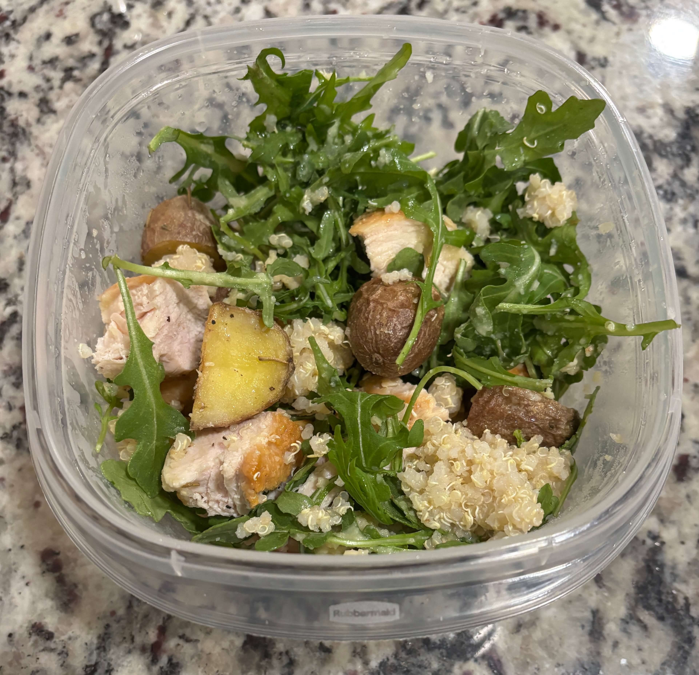

Home
Chicken Red Potato Quinoa Bowl

Ingredients
- Baby red potatoes
- Baby arugula
- 1 lb chicken breast
- 1 cup quinoa
- 1 cup olive oil divided
- 1/4 cup lemon juice
- 1 tbsp dijon mustard
- 2 cloves minced garlic or 1 tsp garlic powder
- 1 tsp honey
- 1 tsp dried thyme
- Salt
- Black pepper
- Dried rosemary
Steps
- Preheat the oven to 400 degrees F
- Cut the baby red potatoes in half or quarters if they are larger than a golf ball. Aim for 1-inch chunks
- Toss the cut potatoes with olive oil, salt, pepper, and dried rosemary
- Cook in the oven for 30-35 minutes shaking the tray at 20 min
- If the potatoes are going into the fridge for later splash them with apple cider vinegar to keep the potatoes from being bland later
- While the potatoes are cooking, cook the chicken breast in vegeatable oil after seasoning both sides with salt and pepper and patting dry
- After the chicken is cooked fully through using a meat thermometer to check let it sit for 10-20 minutes before cutting into cubes
- Cook 1 cup of quinoa according to the package instructions after rinsing the quinoa
- Assemble the food with quinoa on the bottom, sliced chicken and roasted red potatoes in the middle, then arugula on top
- In a bowl create the dressing by mixing together 1/2 cup olive oil, 1/4 cup lemon juice, 1 tbsp dijon mustard, 2 cloves minced garlic or 1 tsp garlic powder, 1 tsp honey, 1 tsp dried thyme, 1/2 tsp salt, 1/4 tsp black pepper
- Taste the dressing, if it tastes too sharp add a splash of olive oil, if it tastes too bland add salt, if it tastes too acidic add honey